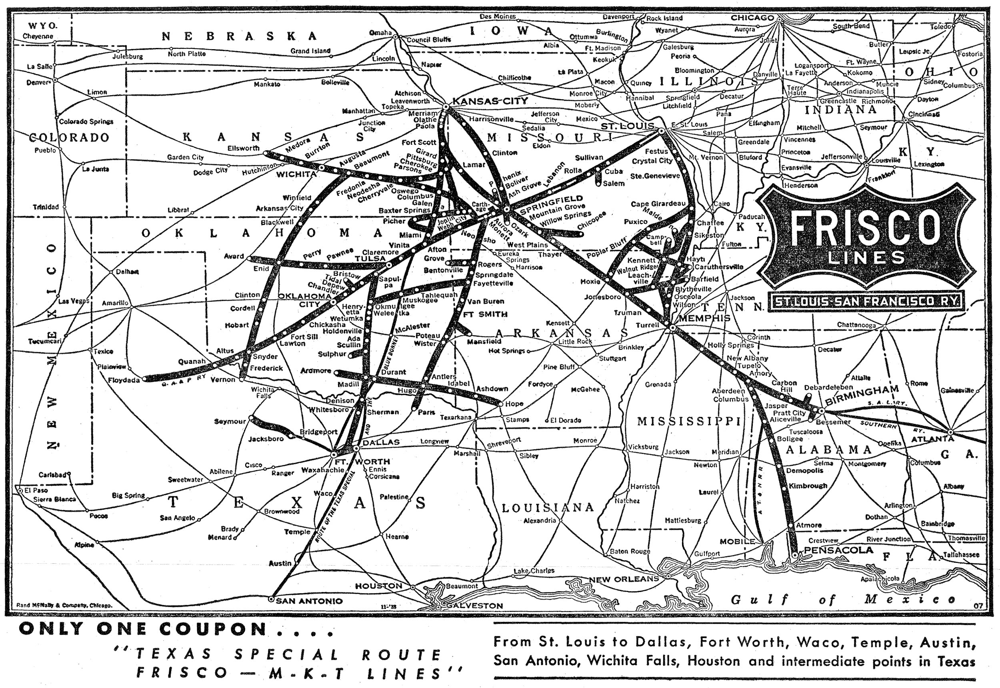

Railroad Historical Museum INC of Springfield Missouri
Home
☓
Tours
☓
Reservation Form
☓
Links

Helpful Links
Be sure to like our FaceBook page!
Our FaceBook! Follow for Weekly Updates!
Railroad Historical Museum
Big Supporters of Railroad Historical Museum INC
Musgrave Foundation
Fantastic Info About Steam Locomotives!
steamlocomotive.com
General Overview of Trains and their Operations
www.trainweb.org
The Park Board's Page About Us!
The Park Board